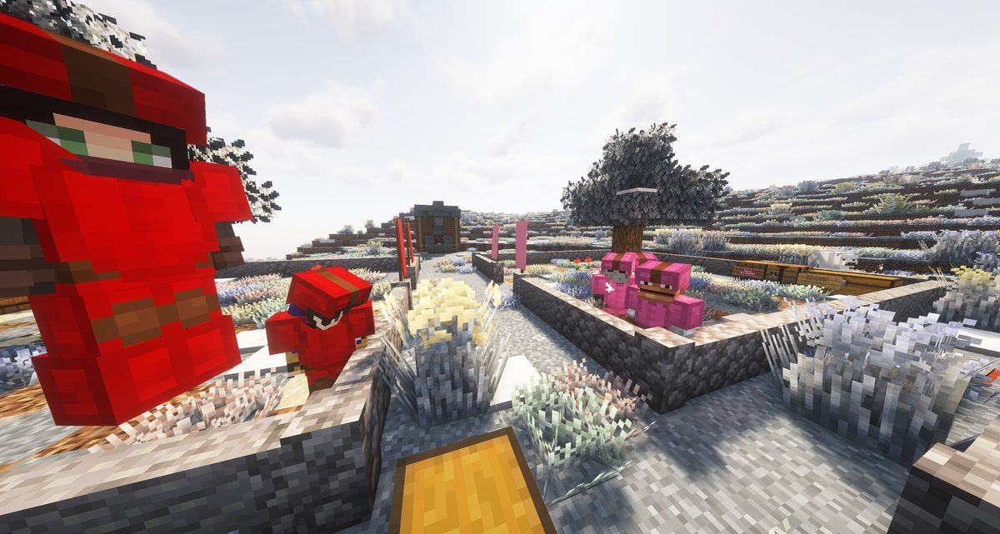
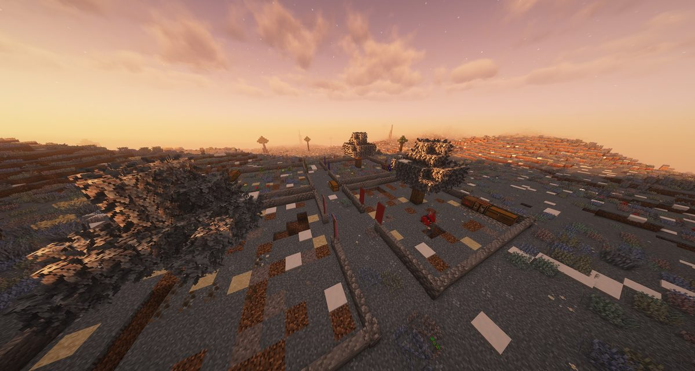
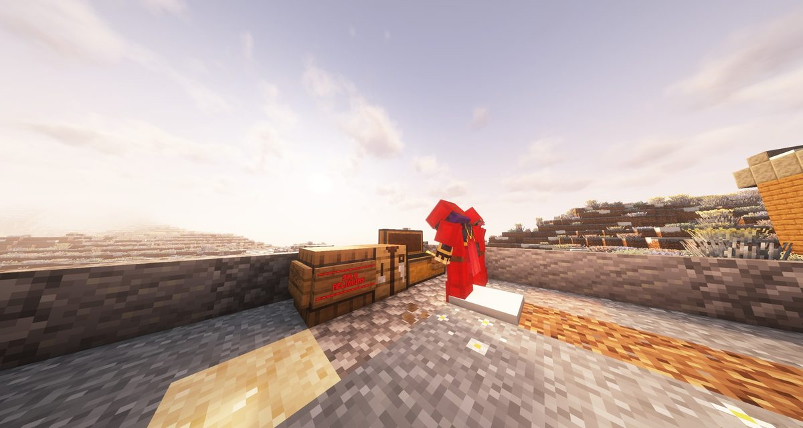
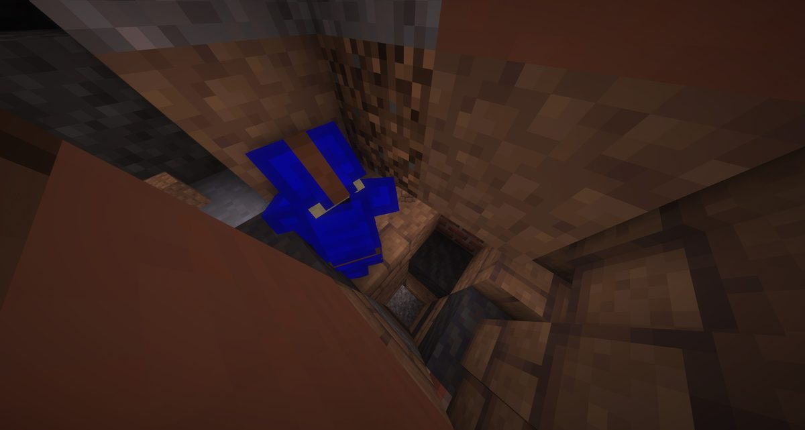
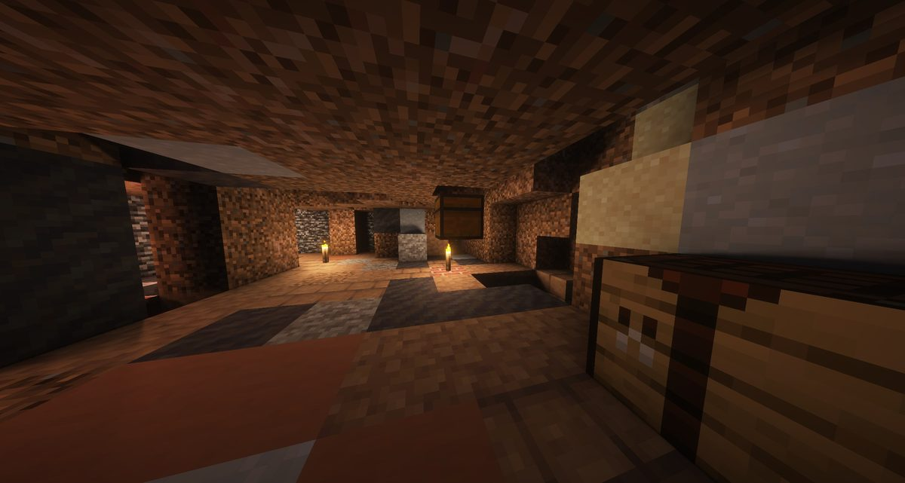
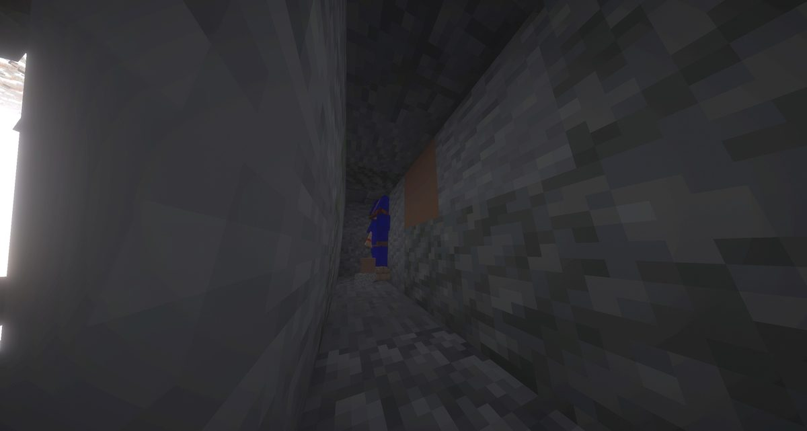
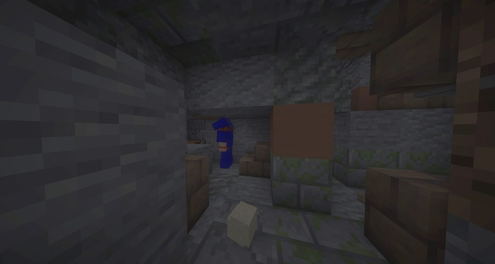
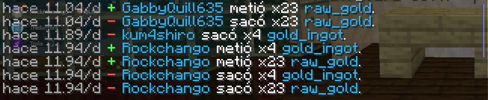
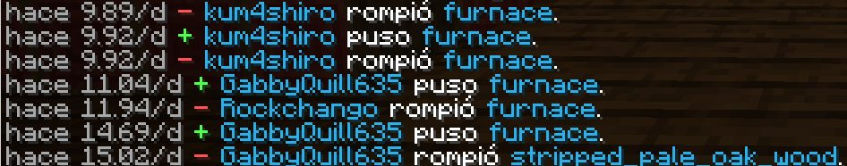

Boletín Oficial del Ayuntamiento del Reino · Se informa, no se alarma
EL HERALDO DEL REINO
Número 2313 de septiembre de 2026Tarde del domingo 13 de septiembre a la mañana del lunes 14
SE DIO INICIO A LA EXCAVACIÓN, Y AUN ASÍ LOS RETRASADOS DE LOS VECINOS DEL REINO NO DEJARON DE MATARSE ENTRE SÍ
Nueve vecinos, cuatro equipos y treinta y ocho minutos de pico bajo el Reino para responder a la pregunta de la Dra. Pizarrica: qué había aquí antes que nosotros. El recuento, leído a bando a las 22.54, dio 169 puntos al Equipo Rosa y 168 al Azul, y el propio Ministerio hizo constar después que el ganador tenía un integrante más que los demás. Durante la faena el Negociado de Fenómenos anunció una ventisca, un viento y una corriente de almas «que no muerde»; hubo las tres, y además rayos y un tornado. Se registraron 29 defunciones en una hora, diecinueve de ellas a manos de otro excavador. La doctora dio la jornada por concluida con una recomendación que esta Oficina traslada sin comentario: no preguntar qué había debajo.
Redactado por la Oficina de Prensa del Ayuntamiento
PORTADA
Treinta y ocho minutos bajo el Reino, cuatro equipos y la pregunta sin contestar

A las 22.13, en las parcelas. A la izquierda, dos del Equipo Rojo, uniformados; al fondo, dos del Rosa, que a esa hora no sabían que iban a ganar por un punto y ya trabajaban como si lo supieran.Archivo Municipal · pase el ratón para revelarla
La convocatoria la firmó el Ministerio de Construcciones a las 15.37 del
domingo, después de una votación: la Gran Excavación sería esa misma noche, a las
22.00, con salida desde la Plaza del Reino. Motivo, según la Dra. Pizarrica:
bajo el Reino «se han encontrado restos antiguos, cerámica, estructuras enterradas y
otras cosas que probablemente habría sido mejor no tocar». Condiciones: ir sin
objetos ni armadura, solo con comida. Las herramientas las ponía el Ayuntamiento,
«poco, tarde y mal», que es la primera vez que esta casa describe su presupuesto
con tanta exactitud.
A las 21.58 se leyó el último bando —«Llegad ya, que la arqueología no espera
a nadie con inventario lleno»— y a las 21.59 el vecindario fue trasladado en
bloque al yacimiento. Acudieron nueve: ArsarFurro, Cliqueame, Demaxxp,
GabbyQuill635, Jooan786, kum4shiro, LetayReaver, Mariowo_ y Rockchango. Repartidos en
cuatro equipos por colores: Rojo, Azul, Verde y Rosa. A las 22.00 el Ministerio
dio la última instrucción a pie de obra: «ve a quitarte la armadura. Y sin
herramientas». Cliqueame contestó «ok, patrón».
Durante la faena el Ministerio fue leyendo bandos, y esta Oficina los reproduce porque
son lo más parecido a un reglamento que ha tenido nunca una excavación en este pueblo. A
las 22.27: las vasijas enteras dan puntos extra, porque «molesta menos a
la Dra. Pizarrica». A las 22.28: «lo que no entreguéis, no existe. Como
varios informes municipales». A las 22.33: «últimos hallazgos, últimas
traiciones al pico de piedra y últimas malas decisiones». Y a las 22.38:
«dejad de cavar como animales».
Se dio inicio a la excavación, y aun así los retrasados de los vecinos del Reino no
dejaron de matarse entre sí. Ningún bando consiguió pararlo. La primera defunción a manos de un compañero de faena se
registró a las 21.59, un minuto antes de que sonara la salida; la última, a
las 22.59, dos minutos antes del fallo. En medio, diecinueve, y ni el
viento, ni la corriente de almas, ni los rayos, ni el recuento interrumpieron la
costumbre. Esta Oficina buscó en el nomenclátor una palabra más administrativa para nueve
adultos convocados a desenterrar el pasado del Reino que dedican la hora a enterrarse unos
a otros, y no la encontró. Se queda la de arriba. El desglose, en la página de
sucesos.
Salió cerámica, pedazos de vasija y lo que la caja del depósito llama
RELIQUIAS. Dos vecinos consiguieron además recomponer una vasija entera con sus
pedazos: Jooan786 a las 22.24 y ArsarFurro a las 22.41, tres
minutos después de acabar, que el reglamento no aclara si cuenta.
El recuento se leyó a bando entre las 22.53 y las 22.54. Equipo
Rojo: 138 puntos, «sorprendentemente, casi todo llegó entero». Equipo
Azul: 168, más cinco pedazos de vasija. Equipo Verde: 32, «poco material,
pero oficialmente desenterrado». Equipo Rosa: 169, más nueve pedazos. A las
23.01, el bando final: gana el Rosa. En el mismo minuto constan dos
celebraciones en la plaza, la de LetayReaver —«¡El Dream team GANÓ!»— y la
de Rockchango —«AHUEVO»—, de lo que esta Oficina deduce, sin mayor
investigación, quién estaba en el equipo.
A las 23.07 el Ministerio publicó en el tablón su propio comentario al
resultado, y esta casa no lo mejoraría: la victoria fue por un punto, el equipo
ganador tenía un integrante más que el resto, y por tanto fue «técnicamente
histórica y estadísticamente bastante vergonzosa». El premio: un escudo irrompible
que alumbra alrededor de quien lo lleva. Esta Oficina hace notar que es una recompensa
que sirve para ver lo que hay debajo, y que se le ha dado a quien ya ha terminado de
mirar.
En cuanto a la pregunta que motivaba todo —qué había aquí antes del Reino—, la
doctora la dejó donde estaba. Su último bando, a las 23.01, «da por concluida la
jornada y recomienda no preguntar qué había debajo». Y el comunicado del Ministerio
añade: «el material recuperado queda registrado, los agujeros quedan donde están y nadie
parece tener demasiadas ganas de seguir preguntando». Esta Oficina tampoco.

El yacimiento desde lo alto, a las 22.20: las parcelas cercadas, cada una con sus banderolas de color, y los primeros agujeros ya abiertos. Al fondo, a la derecha, un excavador del Rojo en plena faena. El cielo es el de dos minutos antes de la ventisca.Archivo Municipal · pase el ratón para revelarla

22.33. Un integrante del Rojo ante la caja del depósito, rotulada SOLO RELIQUIAS. El Rojo acabó con 138 puntos y «casi todo entero», que es de lo poco que esta casa puede decir con orgullo de una obra suya.Archivo Municipal · pase el ratón para revelarla

22.33, quince segundos después: un excavador del Azul bajando por uno de los pozos. Su equipo perdió por un punto. Este Heraldo no sabe si aquí dentro estaba ese punto, pero la foto está.Archivo Municipal · pase el ratón para revelarla

22.33, bajo tierra: una estancia con velas encendidas, suelo de tierra apisonada y un arcón. Esta Oficina se limita a describir lo que se ve y recuerda que la doctora recomendó no preguntar. Nadie ha explicado quién encendió las velas.Archivo Municipal · pase el ratón para revelarla
ANOMALÍAS
El Negociado de Fenómenos anunció una corriente de almas «que no muerde». En el minuto siguiente murieron cuatro
El Negociado de Meteorología tuvo una noche de trabajo. A las 22.20 avisó de
una tormenta de frío —«buscad techo», a nueve vecinos que estaban dentro de
un agujero— y diez segundos después entró la ventisca. A las 22.24 avisó de que la
tormenta se intensificaba y pidió «agarraos a algo y bajad de los tejados».
A los veinte segundos, el viento levantó a GabbyQuill635 y a ArsarFurro lo
bastante como para sacarlos del Reino. Volvieron al minuto. Lo primero que escribió
ArsarFurro fue «ayidaaa», dos veces.
A las 22.29, el Negociado dio el parte por cerrado con una frase que esta Oficina
enmarca: «El frente ha pasado. Cielo despejado y sin viento. El Negociado de
Meteorología pide disculpas a quien haya acabado en un tejado».
Y a las 22.33, cuatro minutos después, el Negociado de Fenómenos anunció una
corriente de almas sobre el yacimiento, con esta descripción literal: «No rompe
nada y no muerde. Solo no vais a ver un pijo y se anda como con resaca.» En los
treinta y cuatro segundos siguientes murieron cuatro excavadores a manos de unas figuras
aladas que venían con la corriente: kum4shiro y LetayReaver a las 22.33,
Rockchango y Cliqueame a las 22.34. LetayReaver informó de que había
aparecido en su casa. ArsarFurro, de que no veía. Y a continuación, con una
sola palabra, formuló la primera queja formal de la noche: «Boicot».
El Negociado mantiene que la corriente no rompió nada, y en eso tiene razón. Sobre
lo de que no mordía, ha adoptado una medida correctora tras el oportuno estudio:
desde esta misma noche la corriente de almas viene sin las figuras aladas, que eran
lo único que mordía. O sea que la descripción era buena; lo que estaba mal era la
corriente.
Las dos fotografías siguientes se tomaron a las 22.35, dentro de la corriente. El
Archivo Municipal las ha tenido que aclarar para que se vea algo, que es exactamente lo que
el Negociado dijo que pasaría.

22.35. Un pasillo bajo tierra, durante la corriente de almas. Al fondo, un excavador del Azul. Aclarada por el Archivo: en el original no se veía, como anunció el Negociado, «un pijo».Archivo Municipal · pase el ratón para revelarla

22.35, veintisiete segundos después. Otra estancia enterrada, cajas de madera, piedra con musgo y un excavador del Azul que siguió trabajando a oscuras. Su equipo es el que perdió por un punto.Archivo Municipal · pase el ratón para revelarla
SUCESOS
Diecinueve excavadores muertos a manos de otro, de la primera hora a la última, y ninguno de los de Cliqueame fue Mario
La faena acabó a las 22.38. Lo que vino después, hasta el fallo de las 23.01,
el Ministerio lo llamó «proceso de revisión de todos los grupos» (22.47) y el
registro de defunciones lo llama de otra manera. Entre las 21.59 y las
22.59 constan 29 defunciones, y diecinueve fueron a manos de otro
vecino. Por autor: ArsarFurro, seis; LetayReaver, cuatro; Mariowo_,
tres; Cliqueame y Demaxxp, dos cada uno; Rockchango y
GabbyQuill635, una. ArsarFurro, además, solo murió una vez, y dejó escrito
el atestado de esa única vez a las 22.46: «me mató un pendejo».
El que más murió fue kum4shiro: once veces, y las once dentro de esa hora. Al
terminar preguntó por lo único que había traído: «y mi armadura». El Ministerio le
contestó «no haberla traído» y «avisé que vinieran sin nada», que es
rigurosamente cierto y no dice dónde está la armadura. El interesado anunció entonces
venganza contra un vecino concreto —«me las van a pagar, sobre todo tú, demax»—;
Demaxxp le contestó «ven, maldito» y le hizo una recomendación de orden
farmacéutico que esta Oficina no reproduce. A las 23.04, kum4shiro se retiró
«ya fuera coña» y dijo que se iba a otro reino, uno con anillo.
A las 22.59, el Ministerio avisó de que dejaría de trasladar a nadie si
seguían matándose. Entre las 22.55 y las 22.57 cayeron rayos sobre
el yacimiento con el cielo despejado, que el Negociado de Meteorología no tenía anunciados.
A las 22.49, en pleno recuento, el Emperador y el Ministro desaparecieron del
Reino a la vez durante dos minutos, en lo que esta Oficina clasifica como fluctuación
de presencia de carácter rutinario. Y a las 23.00, un tornado se llevó por
los aires a ocho de los nueve. El único que se quedó en el suelo fue GabbyQuill635,
que ya había pasado por el aire treinta y seis minutos antes.
Queda un último asunto, y es de justicia. A las 00.26, Cliqueame resumió
la noche en el tablón a quien no pudo ir: «la mayoría del tiempo fue picar piedra y
morir por culpa de mario». _Cafecito_ lo suscribió: «típico de Mario». Y
a las 23.01, LetayReaver ya había dejado su propia opinión sobre Mariowo_, que no se
reproduce. Esta Oficina ha revisado las siete defunciones de Cliqueame: una figura
alada, una caída provocada por Demaxxp, una explosión, dos caídas por su cuenta,
LetayReaver y ArsarFurro. Ni una sola es de Mariowo_, que en toda la noche abatió
a tres: dos veces a kum4shiro y una a Rockchango. Se publica porque es su coartada, y
porque el vecino que más mató, que no fue él, no ha salido en ninguna queja.
Publicada por ArsarFurro a las 23.58 con un pie de dos palabras: «Todo pendejo». Es un integrante del Rosa. ArsarFurro abatió a seis vecinos esa noche y esta Oficina no le va a llevar la contraria.Archivo Municipal · pase el ratón para revelarlaPublicada por Rockchango a las 23.26. El Ministro de Construcciones, con su bata, muy junto a un excavador del Rojo con gorra y bigote. Esta Oficina no sabe qué se dijeron y hace constar que el Ministerio no ha desmentido nada, aunque tampoco se le ha preguntado.Archivo Municipal · pase el ratón para revelarla
SOCIEDAD
_Cafecito_ se perdió la excavación por la hora, y dio los nombres de los que la votaron
A las 23.55, cuarenta y ocho minutos después del fallo, _Cafecito_ dejó
en el tablón una petición y una acusación en la misma línea: «a ver si algún día votan
para que el evento sea temprano así puedo estar», seguida de tres nombres —ArsarFurro,
Rockchango y Cliqueame— y de una sola palabra: «egoístas». A la 01.15 añadió
«me perdí la recompensa». A las 19.53 ya había avisado de que no podía entrar
«porque estoy trabajando».
Esta Oficina recuerda, en descargo de todos, que la hora se votó, y que votar es
justamente lo que se hace para que gane una hora que a alguien no le viene bien. Y hace
constar que la vecina pasó la misma noche dando la bienvenida en el tablón a tres
recién llegados que no conocía, a las 19.56, a las 00.26 y a la 01.16, con las
instrucciones para entrar. Nadie la ha votado para eso. Lo hace igual.
PADRÓN
Tres altas de madrugada, y a la tercera la recibió en persona un Dios
Se tramitaron tres altas: Titocalderoni a las 00.10, pablo2455 a
la 01.01 y Lowfreq_ a las 05.58. El último entró saludando —«holas»— y en
menos de un minuto tenía delante a Cliqueame, Dios del Nuevo Mundo, Patrón de los
Cultivos y Primer Hombre que se Fumó su Propia Mercancía Delante del Cofre, dándole las
tres únicas instrucciones que hacen falta aquí: seguir el puente hasta la isla central
y hablar con Toni, que la casa se puede hacer donde se quiera mientras no pise la
de nadie, y que a los cofres se les pone un cartel para que sean privados.
Lowfreq_ hizo caso. En cincuenta minutos sumó siete méritos y, a las 06.47,
durmió con eso ahí fuera, que es el encargo que esta corporación recomienda para la
primera noche. Bienvenidos los tres. Se les advierte de que la armadura, en este Reino, a
veces no vuelve.
ADMINISTRACIÓN
Tres cierres técnicos en seis minutos, y el Ministro de Construcciones se cayó de una escalera
Entre las 21.40 y las 21.46, a un cuarto de hora del acto, el Reino tuvo
tres cierres técnicos por revisión del pulso, seguidos. El Ministerio lo explicó a
las 21.47 con la franqueza habitual —ya no habría más, «tranquilos, era para el
premio»— y esta Oficina da por buena la explicación, porque el premio salió.
Dos horas antes, a las 20.11, consta en el registro de defunciones la del
Ministro de Construcciones: se cayó de una escalera. Es su única defunción
de la jornada y la única del Ayuntamiento. No se abre expediente, porque la escalera la
habría tenido que inspeccionar él.
Y a las 21.48, Jooan786 pidió a LetayReaver que retirara un cofre
suyo de su propiedad, «frente a la caña de azúcar». LetayReaver contestó que no
tenía ningún cofre allí «que recuerde». A las 21.52, Jooan786 elevó la solicitud al
Ministerio: «ni modo, Pan, ¿puedes venir a sacarlo?». El Ministerio estaba a esa
hora preparando una excavación. No consta respuesta.
EL PARTE DEL PULSO
Lo que se corrigió mientras se cavaba: ciento cincuenta y un títulos que no habían llegado
La incidencia gorda la destapó el mostrador del Refugio de Nico, que llevaba
días exhibiendo a sus animales en el aire: el vecino que iba a por su mascota veía
la correa y nada más, aunque la hubiera ganado. La imprenta municipal había puesto el
candado en una casilla que no era un candado, sino la que elige el dibujo, y el
dibujo salía vacío para todo el mundo. Corregido en catorce mostradores.
Y al corregirlo salió lo de debajo, que es peor: los títulos que concede un encargo se
expiden en el instante de terminarlo, así que cada vez que esta casa añadía un
derecho a un encargo ya cerrado, quien ya lo había cerrado se quedaba sin él. Se
contaron 151 títulos sin expedir en 21 vecinos: entre ellos, cuatro que habían
pagado la fragua y no podían usarla, tres que no podían pintar y tres de los
once que se ganaron una mascota. Expedidos todos esa misma tarde, y comprobados uno
por uno.
Del resto, por orden. El yunque de Lolo cobraba veinte cacahuates por decir que
no: a quien iba con la mano vacía le contestaba «no cumples la condición» y se
quedaba el dinero. Lo denunció Cliqueame a las 02.54. Ahora contesta Lolo con todas
las letras y devuelve los veinte siempre que no arregla nada · El aparato de las
huellas no dejaba pasar a la página dos del expediente, y la que lo denunció a las
05.59 fue precisamente la Encargada del Orden, a seis minutos de firmar una
resolución con él. Corregido · y el viento ya no sopla en el Reino, que es lo que sacó a dos vecinos de él:
ni ese ni ningún otro fenómeno que pueda arrancar un bloque en campo abierto, salvo la
corriente de almas, que no rompe nada y, desde anoche, tampoco muerde. Ninguna reviste gravedad y
todas estaban previstas.
Edición imperial · Pliego de Oro · se imprime aparte
LO QUE DICE EL EMPERADOR
Exégesis oficial de las palabras de Su Majestad
Jornada de audiencia en la plaza, dos horas antes de la excavación. Su Majestad habló de indumentaria, de la Hacienda del Reino y de agricultura, en ese orden, y en un solo minuto fijó una cifra que este Negociado ha tenido que estudiar con la calculadora delante. Se desarrolla abajo.
Esta temporada me he comprado dos chaquetas más.
— S. M. el Emperador Duke, a las 19.39
Lo que estaba pasando Cliqueame le había preguntado dónde consiguió la chaqueta roja con la que se le vio una vez. Su Majestad dio la sastrería, añadió la frase de arriba, la remató con un «grande» y explicó al minuto siguiente que las chaquetas son de temporada y no se repiten: «ahora las de este año son negras».
Lectura oficial Obsérvese que el Emperador no presume de la chaqueta que le preguntan: la da por superada y habla de las dos siguientes. Y a continuación enseña al vecindario una lección de gobierno que esta Oficina no había sabido formular en veintidós números: lo que no se repite no se puede reclamar. La chaqueta roja no volverá. Nadie podrá decir que se le prometió.
★ ★ ★
La corrupción ha llegado.
— S. M. el Emperador Duke, a las 19.45
Lo que estaba pasando Dicho en el instante en que entró en la plaza el Ministro Pan, que había saludado con un «wenas». El Ministro contestó al minuto: «yo nunca robaría un solo cacahuate».
Lectura oficial Tres palabras, y ninguna es un nombre. Su Majestad no acusa a nadie: constata una llegada, con la hora exacta, que es lo que haría un registro de entradas si tuviera criterio. Fue el propio Ministro el que se sintió aludido, y esta Oficina recuerda que nadie le había preguntado.
★ ★ ★
Eso es cierto, uno no. Mínimo 1000.
— S. M. el Emperador Duke, a las 19.46
Lo que estaba pasando La respuesta del Emperador al desmentido del Ministro, en dos líneas seguidas. En el mismo minuto, y sin que conste relación, Cliqueame escribió en la plaza: «se me desaparecieron 1000 cacahuates».
Lectura oficial Aquí está la jornada. Su Majestad no contradice al Ministro: le da la razón, y le da la razón con más precisión que el propio Ministro. Uno no. Es cierto. Y a continuación hace lo que ningún tribunal de este Reino ha hecho todavía, porque no hay tribunal: fija una cuantía mínima. Este Negociado hace notar, por su parte, que la cifra coincide con la que un vecino echó en falta en ese mismo minuto, y que eso no guarda relación alguna con lo anterior. El Ministerio no ha enviado desmentido. Si lo envía, se publicará, añadiendo que no se le acusaba de nada.
★ ★ ★
Buenas tardes, casi noches.
— S. M. el Emperador Duke, a las 21.08
Lo que estaba pasando A GabbyQuill635, que acababa de entrar diciendo «buenos días» a las nueve de la noche. A los ocho minutos, Su Majestad le indicó además dónde se venden todas las semillas: en la granja feliz, previo encargo de llevarles una carta.
Lectura oficial La vecina saludaba desde su mañana y el Emperador contestó desde la del Reino, sin corregirla y sin darle la razón: le ofreció las dos horas a la vez, en una sola frase y con una coma. Es la clase de cortesía que no se enseña. Y ocho minutos después, cuando preguntó por el maíz, no la mandó a ninguna ventanilla: le dijo dónde estaba.
★ ★ ★
Oficina de Prensa · Negociado de Exégesis Imperial
Negociado de Estadística y Mérito
EL ESCALAFÓN DE LA JORNADA
Noche de excavación, y el escalafón lo dice sin necesidad de leer la portada: 36 defunciones, casi todas en la misma hora y casi todas entre vecinos, kum4shiro arriba de la lista de bajas con once, y solo cinco encargos cerrados, porque medio Reino estaba cavando sin cobrar. Encabeza los encargos Rockchango, con tres entre las 05.06 y las 05.28 de la mañana. A las 06.05 fue declarado culpable en la página de al lado. Es el vecino más productivo de la jornada y el único sancionado, y este Negociado no mezcla los dos papeles.
PRIMERORockchango3 encargos
SEGUNDOLetayReaver1 encargos
TERCEROLowfreq_1 encargos
5encargos cerrados16vecinos en el Reino36defunciones11a la vez, como más
Encargos cerrados esta jornada
Defunciones por vecino
Qué se llevó a los vecinos
Vecinos dentro del Reino, hora a hora
Cierra hoy la discrepancia que este Negociado arrastraba desde el número 10: los dos registros cortan ya la jornada a la misma hora, y cuadran. Salvo en una defunción: el parte de esta página anota 37 y este escalafón 36. La que falta es la del Ministro de Construcciones, que se cayó de una escalera a las 20.11 y que este escalafón no cuenta porque no es vecino.
Negociado de Orden y Convivencia · el expediente de los hornos
LA COMISARÍA DEL REINO
Dos autores más, una perjudicada que instruye su propio caso, y lecturas cuatro días más viejas que las que ya se impugnaron por viejas
A las 06.05 del lunes, mientras el yacimiento seguía con los agujeros donde los dejó la doctora, la Encargada del Orden reabrió por escrito el expediente de los hornos y firmó una resolución nueva, con tres lecturas del aparato de las huellas adjuntas. Afecta a dos de las cinco casas que ya estaban contadas. El recuento, por tanto, no cambia: cambian los nombres.
Expediente de los hornos · resolución de las 06.05 del 14 de septiembre
LAS CASAS DE _CAFECITO_ Y DE LA ENCARGADA
La Encargada declara «un segundo responsable» cuyas huellas aparecen en los robos de la casa de _Cafecito_ y en la suya propia, y considera culpable a Rockchango«por ser el otro ladrón de hornos». Declara también que kum4shiro robó hornos en esas mismas dos casas, «siendo la segunda y tercera casa que roba». Sanción, para cada uno: 50 cacahuates o 10 diamantes, a pagar al cuerpo, «con lo que financiará una búsqueda futura de 100 y su propia investigación».
Resuelto y sin cobrar
El cuerpo, y quién responde por cada uno
GabbyQuill635Encargada del OrdenAvalado por El vecindario, por unanimidad, el 6 de septiembre. Instructora y, en una de las dos casas, perjudicada. Esta Oficina lo hace constar sin extraer conclusión: no hay en el Reino otra persona con el aparato. Además murió dos veces en la excavación, salió volando del Reino una, y a las 05.59 denunció que el aparato no le dejaba pasar de página. Firmó la resolución a los seis minutos.
Cómo fue, por horas
05.59La Encargada denuncia que el aparato de las huellas no pasa a la página dos.
06.05Reabre el expediente y declara un segundo responsable, con nombre.
06.06Adjunta tres lecturas: una de la casa de _Cafecito_ y dos de la suya.
06.08Fija la sanción: 50 cacahuates o 10 diamantes cada uno, al cuerpo.
Lo que obra en poder de la Comisaría
Lectura primera, casa de _Cafecito_. Ella pone el horno hace 14,73 días. Hace 11,94 lo rompe Rockchango; hace 10,57 lo repone ella; hace 9,89 lo rompe kum4shiro. O sea que a esa vecina le quitaron el horno dos veces, y entre medias lo volvió a poner.
Archivo Municipal · pase el ratón para revelarla

Lectura segunda, el arcón de la Encargada. Hace 11,94 días, Rockchango metió y sacó veintitrés piezas de oro en bruto y cuatro lingotes. Hace 11,89, kum4shiro sacó cuatro lingotes. Esta Oficina recuerda que el 3 de septiembre la perjudicada denunció el robo con estas palabras: «pero me dejaron mi oro». El oro en bruto, en efecto.
Archivo Municipal · pase el ratón para revelarla

Lectura tercera, los hornos de la Encargada. Rompe uno Rockchango hace 11,94 días; ella pone otro hace 11,04. Hace 9,92, kum4shiro lo rompe, pone uno y, poco después, lo vuelve a romper. Es la primera lectura del expediente en que el autor deja un horno antes de llevárselo.
Archivo Municipal · pase el ratón para revelarla
Esta Comisaría no acusa a ningún vecino: publica una resolución firmada y las lecturas que la acompañan, en el orden en que constan. Se hace notar, porque es del expediente y no un razonamiento, que el 11 de septiembre Rockchango impugnó una sanción anterior alegando que «un registro de hace 7 días no prueba que hice algo». Las lecturas de hoy tienen casi doce. Y que kum4shiro, sancionado ya el día 10 por la casa de Mazitrvrs, fue ese día el único vecino del Reino que devolvió algo. Juzga quien lee.
La Comisaría del Reino · con el visto de la Oficina de Prensa
El parte de la jornada
Duración de la jornada
21 h 10 min, de las 13:20 a las 10:30
Cuentas en el Reino
18 — 16 vecinos y 2 de esta administración
Altas tramitadas
3
Máxima concurrencia
11 a la vez, a las 21:55
Defunciones
37
Defunciones en la hora de la excavación
29
De ellas, a manos de otro vecino
19
Vecino que más abatió
ArsarFurro, 6
Veces que murió ArsarFurro
1
Vecino que más murió
kum4shiro, 11
Defunciones de Cliqueame atribuidas a Mariowo_
0
Encargos cerrados
5
Excavadores
9
Equipos
4
Minutos de faena
38
Diferencia entre el primero y el segundo
1 punto
Integrantes de más en el ganador
1
Vasijas recompuestas
2
Bandos leídos, del aviso de las 21.58 al fallo
14
Fenómenos anunciados
3
Fenómenos habidos
5
Fenómenos anunciados como inofensivos
1
Muertos por ese fenómeno en un minuto
4
Vecinos sacados del Reino por el viento
2
Vecinos llevados por el tornado
8 de 9
Armaduras reclamadas
1
Paradero de esa armadura
no consta
Cierres técnicos antes del acto
3, en seis minutos
Defunciones del Ayuntamiento
1, una escalera
Cuantía mínima fijada por el Emperador
1.000 cacahuates
Cacahuates echados en falta en ese minuto
1.000
Títulos expedidos con retraso
151, a 21 vecinos
Mostradores que exhibían animales en el aire
14, corregidos
Resoluciones de la Encargada del Orden
1
Casas nuevas en el expediente de los hornos
0
Autores nuevos en esas casas
2
Excavaciones en curso
2
De las que se sabe qué se busca
1
Preguntas de la doctora contestadas
0
Aviso oficial
Sobre la Gran Excavación, este Ayuntamiento informa de lo siguiente. Primero,
que el acto se celebró el día anunciado, a la hora votada y en el sitio previsto, que en este
Reino son tres cosas que no suelen coincidir. Segundo, que el recuento es firme, que la
victoria por un punto con un integrante de más no admite recurso —porque no hay dónde
presentarlo— y que el escudo ya está entregado.
Tercero, sobre los fenómenos. El Negociado de Meteorología anunció tres y hubo cinco,
y el único que describió como inofensivo mató a cuatro personas en un minuto. Esta corporación
ha adoptado las medidas correctoras oportunas, que se detallan en el parte del pulso, y
recuerda al vecindario que los partes del cielo son orientativos. Sobre el tornado y los
rayos, el Negociado no se pronuncia, porque no los anunció.
Cuarto. Diecinueve de las veintinueve defunciones de la noche fueron obra de otro
excavador. Este Ayuntamiento hace notar que la convocatoria prohibía llevar armadura y
herramientas, y no decía nada de matarse, y que esa laguna se estudiará antes de la
próxima excavación, si la hay, que no está claro.
Quinto, y sobre la pregunta de la doctora. Esta Oficina no sabe qué había aquí antes
del Reino, no lo ha preguntado y, siguiendo la recomendación expresa de la Dra. Pizarrica,
no lo va a preguntar. Lo que se encontró está registrado. Lo que no se encontró, según el
bando de las 22.28, no existe.
Y sexto. Este número debió repartirse el lunes y se reparte el martes, junto al
siguiente. La Oficina de Prensa lo atribuye a un defecto de la imprenta municipal, y deja
constancia de que ninguna otra autoridad ha tenido nada que ver.